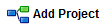
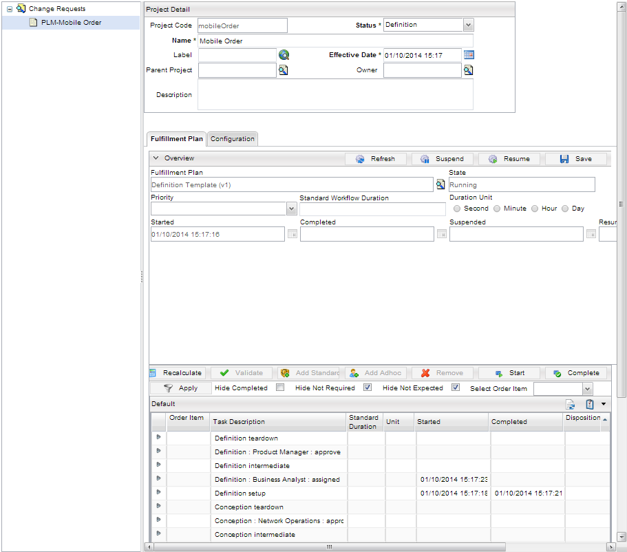

Change Requests
Clicking DESIGNER > Change Requests menu allows to create a new Product Lifecycle Designer (PLD) project. To create PLD project, follow these steps:
- From the menu bar, click DESIGNER > Change Requests menu and then click the Add Project button. You can also click the  button from the Home page of Catalog Management application. The Add project button is unique to the change request process. If this button is not visible, check your privileges (refer to the PLD Setup for more details).
- The Project Detail page appears for the Change Requests.
- Enter the information in the Project Code, Name, Status, Label, Effective Date, Parent Project, Owner and Description (refer to Projects for more details) fields.
- For the Configuration section, select a template from the drop-down list. The templates needs to be pre-configured (refer to the Configure Templates for more Information).
- Click the Submit button. Your project appears in the left pane.
- The Fulfillment Plan tab displays the status of the associated fulfillment plan. From this tab,
you can browse through existing change request orders and check the status of tasks. You can identify a workflow problem as a task that was supposed to be approved the day before is still pending.

|